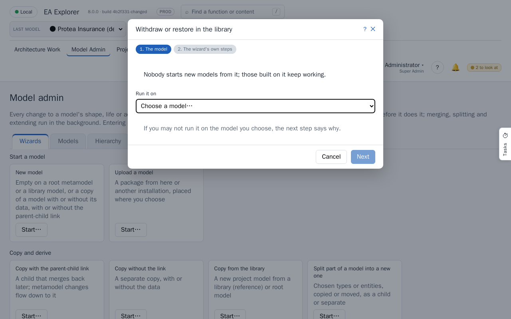

Withdraw a library model
For: Industry model makers
Stop new models starting from it; it can be restored.

#/model-admin/wizards?wizard=withdrawWhy do this
When a reference model is outdated or wrong, withdrawing it stops new models starting from it. Models already made from it keep working. See Industry models and the library.
Reference models only help if they are sound and kept up to date, so the library has its own review: promote, request, approve, publish, and withdraw when a reference is past its time.
In TOGAF terms: The Enterprise Continuum: moving from generic and industry architectures to your organisation's own, and back as reusable references. See EA Explorer and the TOGAF Standard.
The goal: A library model is no longer offered for new models.
Before you start You need the Library Admin role.
Steps
- Open Model Admin › Wizards, Withdraw or restore in the library.
- Pick the model; give the reason.
- Confirm. Models made from it keep working.